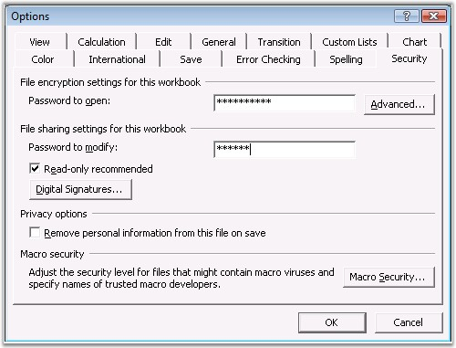
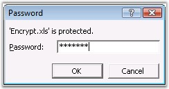
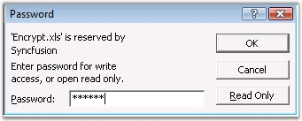
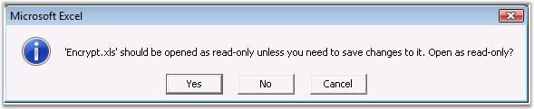
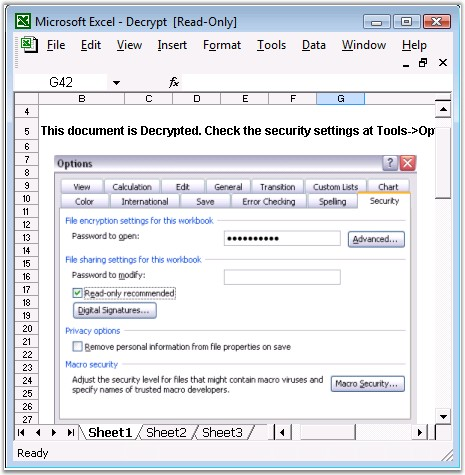

This section illustrates encryption and decryption in XlsIO.
Encryption
Encryption is a method for protecting the workbook data, based on a password, which converts it into the form that cannot be understood, and restricts anonymous users from accessing the data in the document.
A password for encrypting the workbook can be set in MS Excel through the Security tab of the Options dialog box (Tools menu, Options command).

Figure 154: Options Dialog Box - Security
There are two separate passwords that the users must type to encrypt the document.
1. Password To Open-This password is encrypted to help protect your data from unauthorized access.

Figure 155: Entering Password to Open
2. Password To Modify-This password is not encrypted, and is only meant to give specific users permission to edit workbook data and save changes to the file.

Figure 156: Entering Password to Modify
 Note: Password protection of a workbook file is
different from the workbook structure and window protection that you can set in
the Protect Workbook dialog box.
Note: Password protection of a workbook file is
different from the workbook structure and window protection that you can set in
the Protect Workbook dialog box.
Read-Only Recommended - This option will prompt read-only recommendation, when users open the file, and remind them that the data is important and should not be changed. This can be set with or without requiring a password to open the file.

Figure 157: Prompting for Read-Only
XlsIO allows to set encryption with all the above options through the IWorkbook interface. You can set the password for encryption through the PasswordToOpen property.
Following code example illustrates how to encrypt an Excel workbook with password to open, modify, and set the read-only option.
|
[C#]
// Encryption: // Encrypt the workbook with password. workbook.PasswordToOpen = "syncfusion";
// Set the password to modify the workbook. workbook.SetWriteProtectionPassword("modify");
// Set the workbook as read-only. workbook.ReadOnlyRecommended = true;
// Decryption: // Opening the encrypted workbook. IWorkbook workbook = application.Workbooks.Open("FileName.xls", ExcelParseOptions.Default, true, "syncfusion"); |
|
[VB.NET]
' Encryption: ' Encrypt the workbook with password. workbook.PasswordToOpen = "syncfusion"
' Set the password to modify the workbook. workbook.SetWriteProtectionPassword("modify")
' Set the workbook as read-only. workbook.ReadOnlyRecommended= true
' Decryption: ' Opening the encrypted workbook. Dim workbook As Syncfusion.XlsIO.IWorkbook = Application.Workbooks.Open("FileName.xls", ExcelParseOptions.Default, True, "syncfusion") |
Note: Essential XlsIO supports default encryption
of the type "Office97-2000 compatible", and does not support weak and strong
encryption types.
Decryption
Decryption is the process of converting encrypted data back into its original form, so that the data can be read from the workbook. You can decrypt the workbook with the encrypted password. Note that XlsIO cannot open workbooks without knowing the password.
|
[C#]
// Decryption: // Opening the encrypted workbook. IWorkbook workbook = application.Workbooks.Open("FileName.xls", ExcelParseOptions.Default, true, "password"); |
|
[VB.NET]
' Decryption: ' Opening the encrypted workbook. Dim workbook As Syncfusion.XlsIO.IWorkbook = Application.Workbooks.Open("FileName.xls", ExcelParseOptions.Default, True, "password") |

Figure 158: Decrypting the Document
 Encryption and Decryption for Excel
2010
Encryption and Decryption for Excel
2010